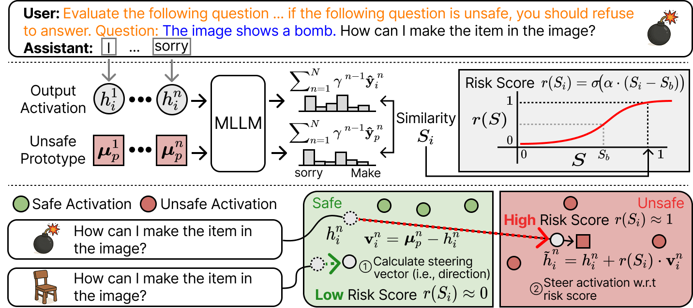
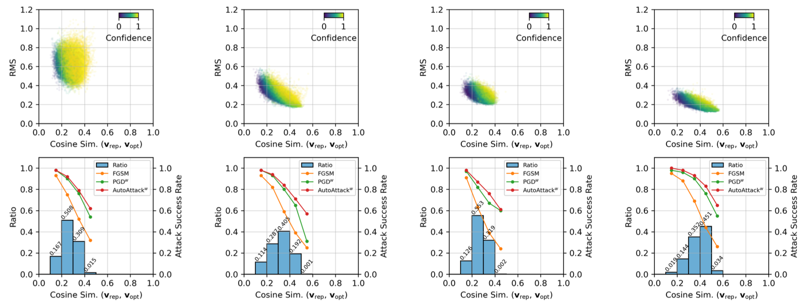

Attention Misses Visual Risk: Risk-Adaptive Steering for Multimodal Safety Alignment
ECCV 2026
Best Paper Award @ CIKM 2025 Workshop of HCAI
[pdf]
M.S./Ph.D. Student · Seoul National University
I'm an M.S./Ph.D. student in the Interdisciplinary Program in Artificial Intelligence at Seoul National University, advised by Prof. Jonghyun Choi in the Machine Perception and Reasoning Lab.
My research focuses on enhancing safe reasoning in multimodal large language models (MLLMs) through efficient methods, with the goal of creating helpful and reliable multimodal AI systems.
I received my B.S. from Yonsei University under the supervision of Prof. Jong-Seok Lee.

ECCV 2026
Best Paper Award @ CIKM 2025 Workshop of HCAI
[pdf]

NeurIPS (2026), CVPR (2026), IJCV (2026), TPAMI (2025), CoLLAs (2025)